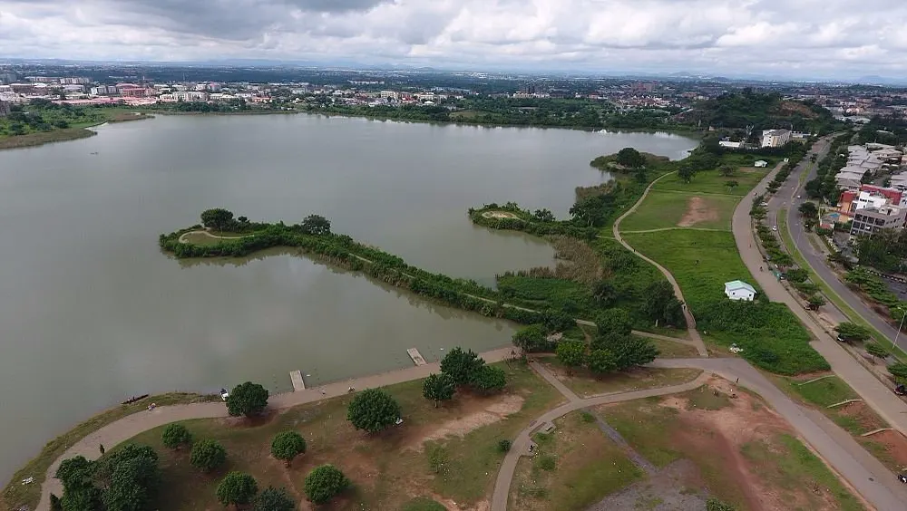
Destination Guide
Abuja
Nigeria's planned capital, with giant granite rocks, lakeside evenings, and a serious art scene. Here's how to see it without overpaying for any of it.
Home / Destinations / Abuja
Best time to go
Nov – Mar
Fly into
Abuja (ABV)
Currency
Nigerian naira (NGN)
Suggested stay
3–4 days
Plan This Trip
Search flights and hotels for Abuja right here — no extra tabs.
Prefer another search engine? Kiwi.com →
Why go
Abuja is greener, calmer and more spread out than most West African capitals, with huge granite outcrops on its doorstep, lakes and dams for easy escapes, and galleries, malls and restaurants that keep evenings busy. Three or four days covers Zuma Rock, a lakeside afternoon, a gallery crawl and a few good dinners.
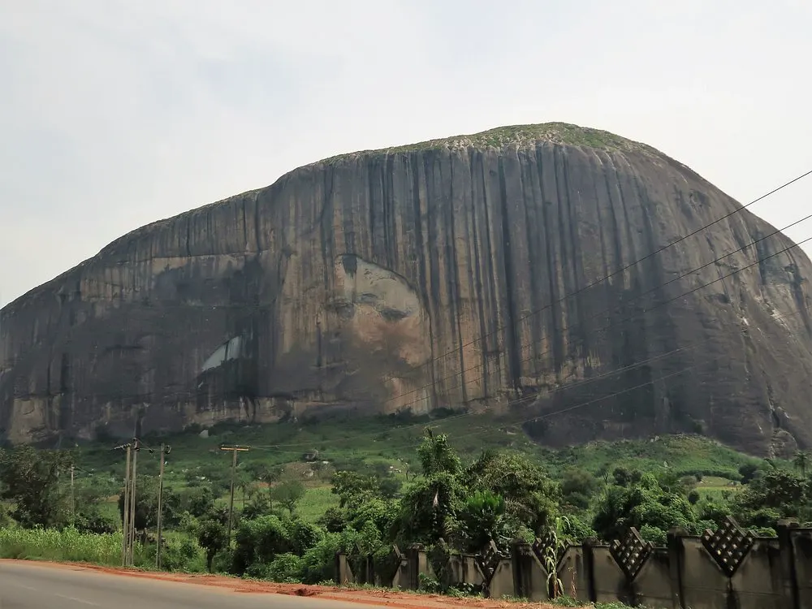
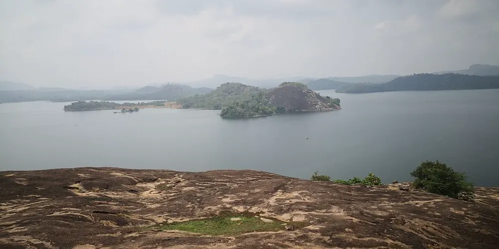
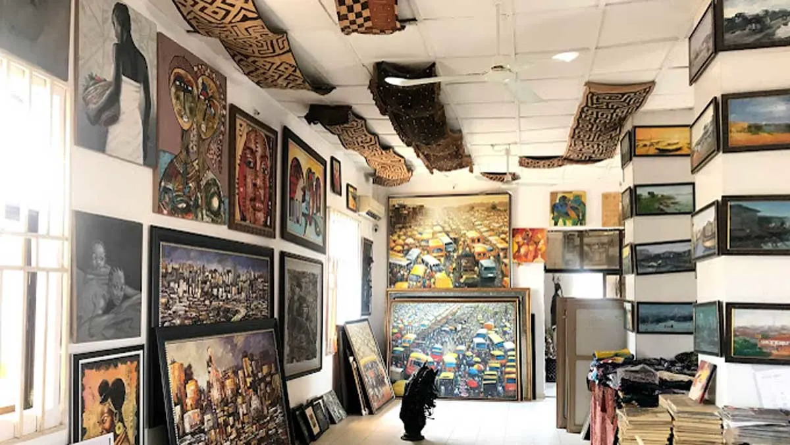
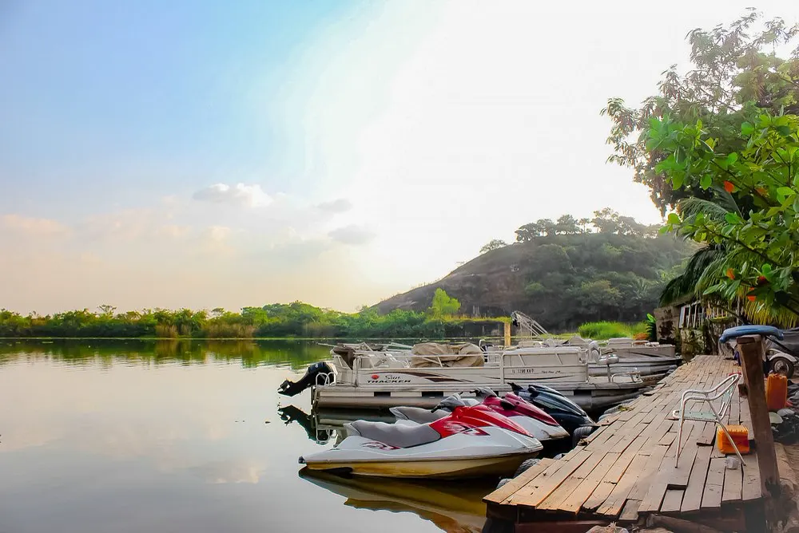
Where to Stay — Abuja
From serviced suites to a classic resort-style hotel, these four make good bases. Central districts such as Maitama and Wuse put you closest to restaurants and galleries.
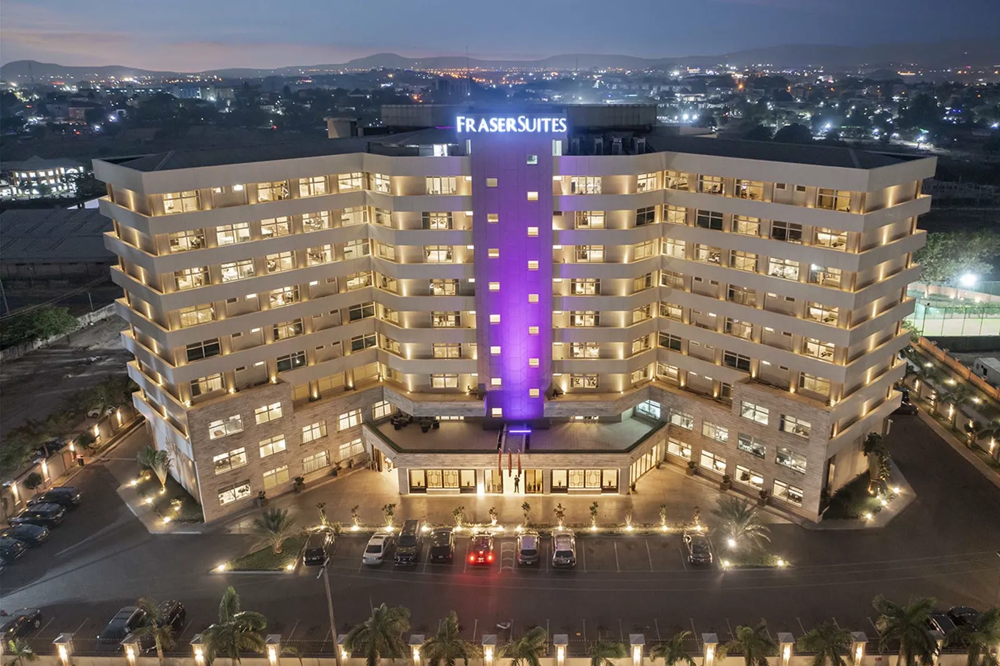
Fraser Suites Abuja
Apartment-style suites in a landmark tower. A good pick for longer stays, with room to spread out and cook.
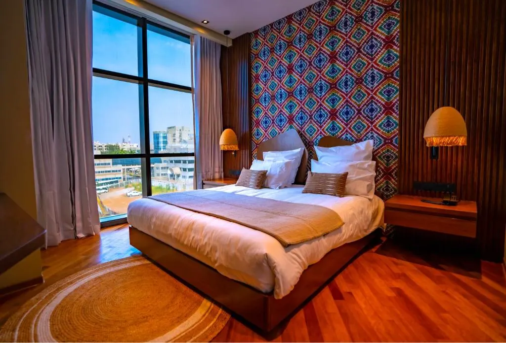
Onomo Hotel Abuja
A stylish, design-led hotel with African-print touches and big city-view windows, at a mid-range price.
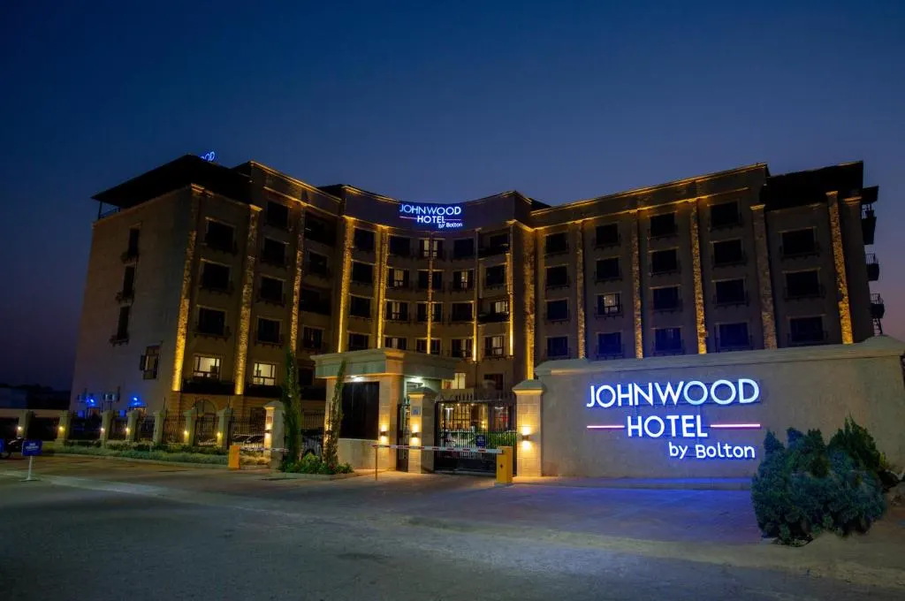
Johnwood Hotel by Bolton
A smart, modern hotel with a stone-clad facade and a calm, business-friendly feel.
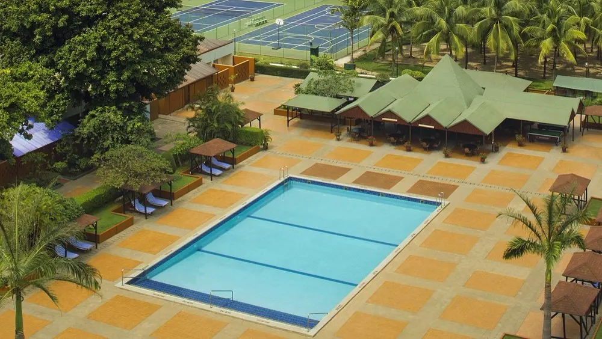
Abuja Continental Hotel
Resort-style grounds with a big pool, shaded terraces and tennis courts, a rare amount of space for a city hotel.
Rocks, Lakes & Dams
Abuja's best views are natural, and most are an easy drive from the city.
Zuma Rock & Usuma Dam
Granite giants and big water
Zuma Rock is the capital's signature sight, a vast monolith rising out of the landscape about an hour's drive from the centre, and the standard photo stop on the road in. North of the city, Usuma Dam adds big-sky reservoir views and island-dotted water. Go early, bring water, and confirm access with your hotel or driver.
Jabi Boat Club — a relaxed spot on Jabi Lake for sunset drinks, with boats and jet skis for hire. Check prices and safety gear before you go.
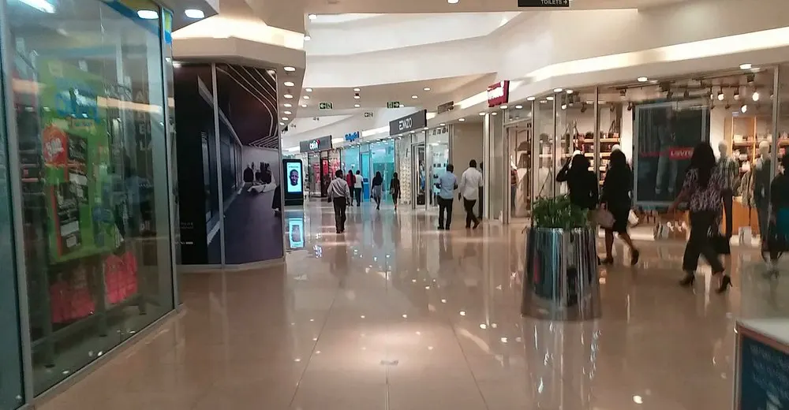
Jabi Lake Mall — a modern air-conditioned mall beside the lake, good for a cool-down, a meal and some shopping.
Art, Culture & Shopping
Abuja's gallery scene is one of the best reasons to linger in town.
Nike Art Gallery
Packed floor to ceiling with paintings, textiles and sculpture, a joyful place to browse and buy.
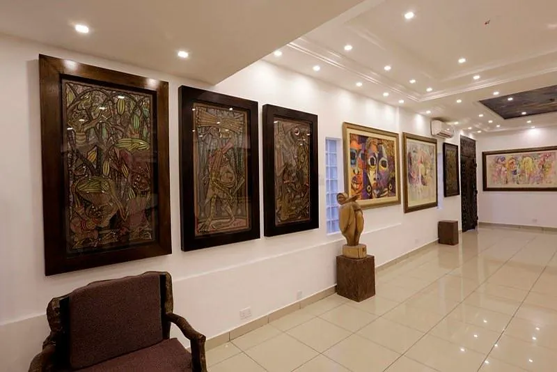
Thought Pyramid Art Centre
A quieter, contemporary gallery with bold large-format work and a thoughtfully curated feel.
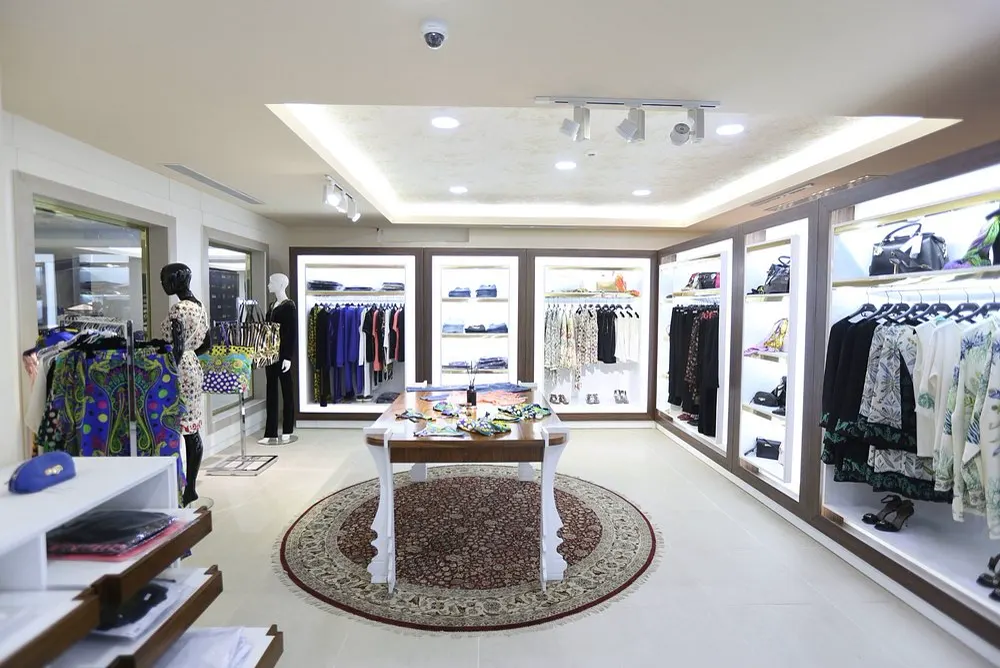
Dunes Centre
A fashion and lifestyle stop for Nigerian designers, accessories and fabrics you will not find at home.
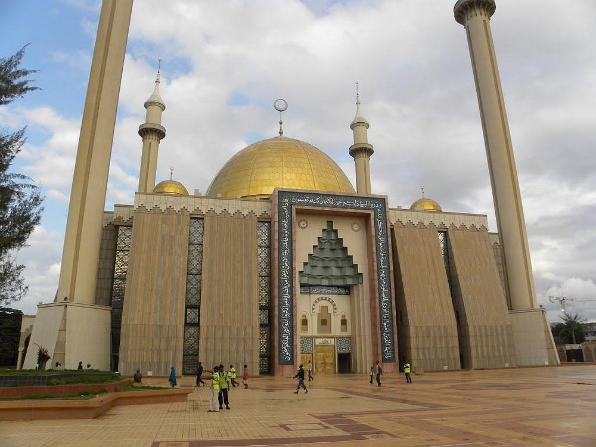
Abuja National Mosque — the capital's best-known landmark, with a golden dome and four tall minarets. Dress modestly and check visiting hours before you go.
Eat, Drink & Play
Dinner is a big deal in Abuja, and there are plenty of family-friendly options too.
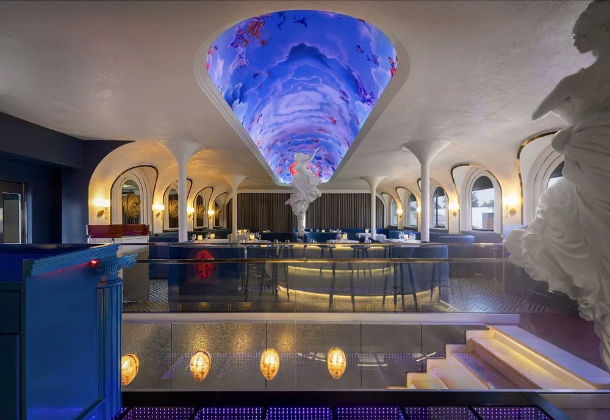
La Luna — a showpiece dining room under a glowing sky-mural ceiling. Book ahead and dress up.
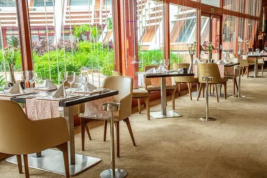
Zuma Grill — a bright dining room with garden views, a calm lunch or dinner stop.
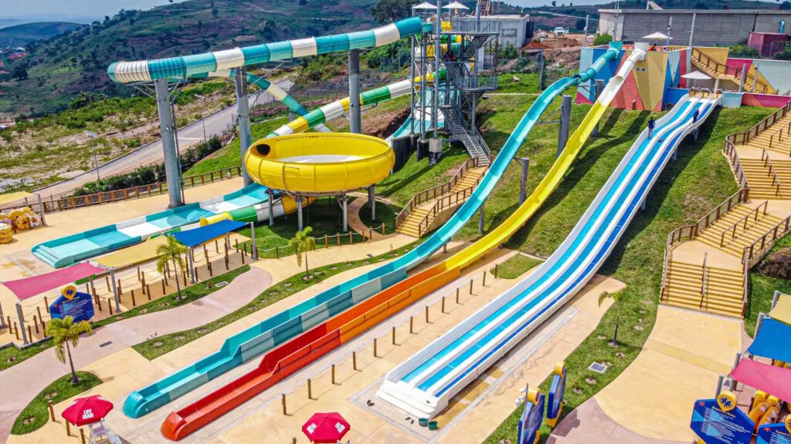
Sunrise Water Park — big slides and splash zones, a fun day out in the heat if you are travelling with kids.
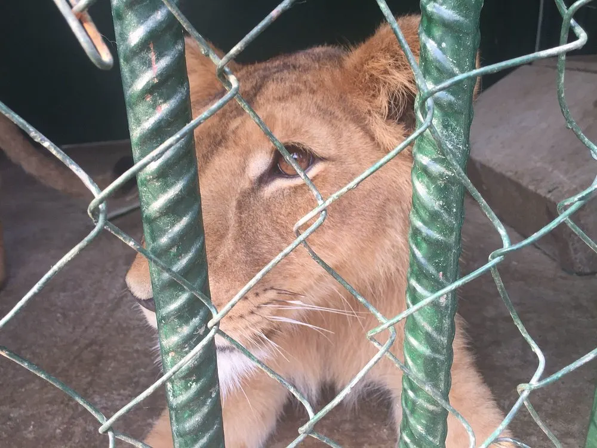
National Children's Park & Zoo — a family stop with animals and play areas. Animal welfare standards vary, so judge for yourself.
Getting There
Nnamdi Azikiwe International Airport
Airport code: ABV
Abuja's main airport lies roughly 35–40 km from the city centre, typically 45–60 minutes by car depending on traffic. Domestic carriers such as Air Peace link it with Lagos and other Nigerian cities, and several international airlines fly in from Europe, the Middle East and across Africa. Arrange your pick-up in advance.
A Simple 4-Day Route
Day 1
Lake & Dinner
Easy arrival day at Jabi Lake: the boat club at sunset, then dinner at La Luna.
Day 2
Art & Shopping
Nike Art Gallery and Thought Pyramid, then browsing at the Dunes Centre and Jabi Lake Mall.
Day 3
Zuma Rock
Early drive out to Zuma Rock, back via a long lunch, and a quiet evening by the pool.
Day 4
Dam & Departure
A morning at Usuma Dam, or a family stop at Sunrise Water Park, then the airport.
Good to Know
Getting around
Ride-hailing apps and hotel-arranged drivers are the easiest option. Traffic is heavy at rush hour, and distances are long, so plan one big sight per day. Agree taxi fares before you set off.
Entry & safety
Most visitors need a visa arranged before travel, and proof of yellow fever vaccination is usually required. Check your government's current travel advice for Nigeria and local conditions before you book, especially for trips outside the city.
Packing
Light, breathable clothes, sunscreen, and a rain jacket in the wet season. Dec–Jan brings dusty harmattan air, so bring lip balm and eye drops. Carry some naira for small purchases.
Start Planning Your Abuja Trip
Compare flights to Abuja, and browse hotels from Maitama to Wuse, in one place.